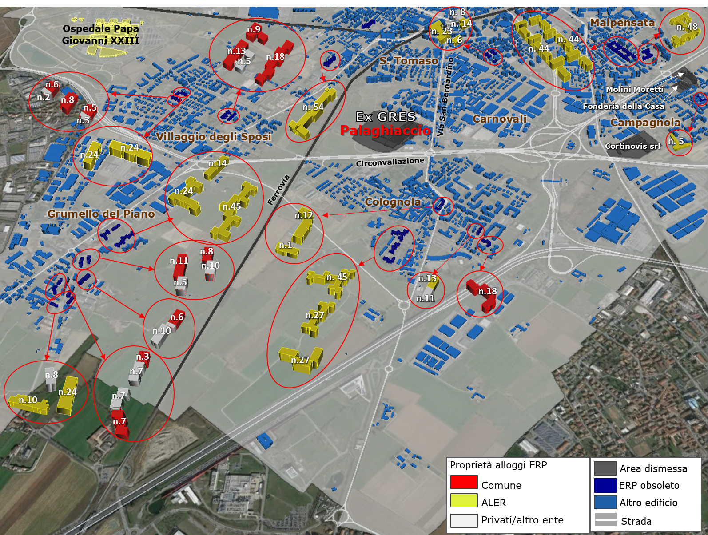

| Edilizia residenziale pubblica (ERP) obsoleta e aree dismesse |
|  La periferia sud-occidentale di Bergamo mostra la presenza di numerosi stabili ERP obsoleti, la cui proprietà degli è divisa tra comune, ALER e privati |
Le
presenza di numerose aree dismesse nel territorio bergamasco evidenzia
il cambiamento nell’uso degli spazi, così come nell’organizzazione
delle strutture produttive della città. Infatti, a fronte della
presenza di aree dismesse, prevalentemente industriali, distribuite sia
nella periferia (come la Molini Moretti a Campagnola) che nel centro
(come la Portland situata vicino alla stazione), oggi si registra la
creazione di un polo espressamente dedicato all’innovazione e alla
produzione a ridosso dell’autostrada, che include il Piano Insediamento
Produttivo (P.I.P.) "Industrie nel Bosco", ai margini sud-occidentali
del comune di Azzano S. Paolo, e il Parco Scientifico Tecnologico
"Kilometro Rosso", lungo l’asse autostradale a nord di Stezzano. Allo
stesso tempo, le aree dismesse, in alcuni casi, sono diventate rifugio
di senza tetto e sbandati, costituendo un problema sociale, oltre che
di consumo di suolo, come nel caso della ex Molini Moretti localizzata
a Campagnola, a est dell’area ex-Gres, per la quale gli abitanti, già
da tempo, chiedono lo sgombero e la demolizione della struttura. Inoltre, nelle vicinanze dell’ex-Gres si registra la presenza di Edilizia Residenziale Pubblica obsoleta (costruita tra il 1949 e il 1980 e identificata in base alle norme edilizie che hanno regolato la qualità delle costruzioni), che necessiterebbe di un processo di rigenerazione degli stabili, non più adeguati alle attuali esigenze abitative e alle norme vigenti su sicurezza e materiali. Tali edifici si concentrano, nello specifico, nei quartieri di Villaggio degli Sposi, Grumello del Piano, Colognola, Campagnola, Carnovali e Malpensata. Per ciò che riguarda la proprietà, gli alloggi sono in prevalenza di ALER, ai quali se ne aggiungano alcuni comunali o misti (comunale/ALER e privata). Considerando il fatto che questi edifici presentano nella maggior parte dei casi un alto grado di obsolescenza, essendo stati costruiti prima del 1965, in una più ampia prospettiva di rigenerazione della periferia di Bergamo questa parte della città potrebbe costituire un interessante laboratorio di applicazione del metodo RIFO, non solo per la rigenerazione dell’area dismessa dell’ex-Gres, ma anche per quanto riguarda la riqualificazione dell’obsoleto, nonché per la definizione di un modello di intervento esportabile in altre zone della città, interessate dalla presenza di dismesso e obsoleto. Probabilmente, una buona riconnessione dell’area alla città permetterebbe di superare la sua attuale condizione di isolamento e innescherebbe un processo virtuoso anche in chiave "rigenerativa", attirando nuovi investimenti. |